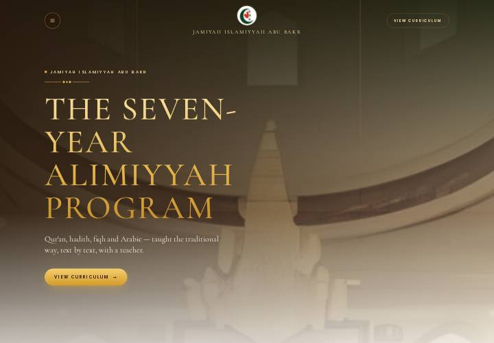
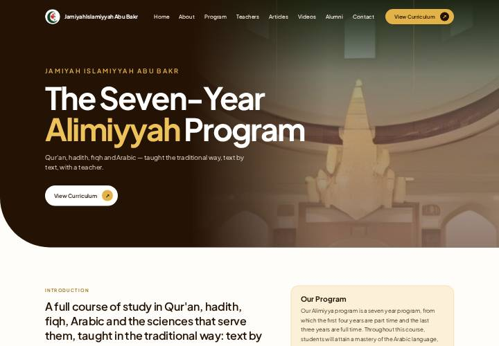
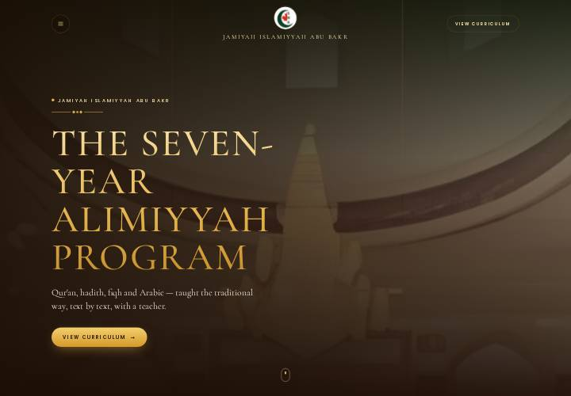
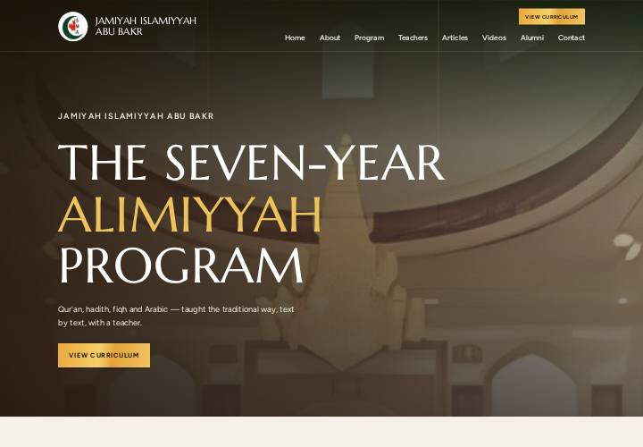
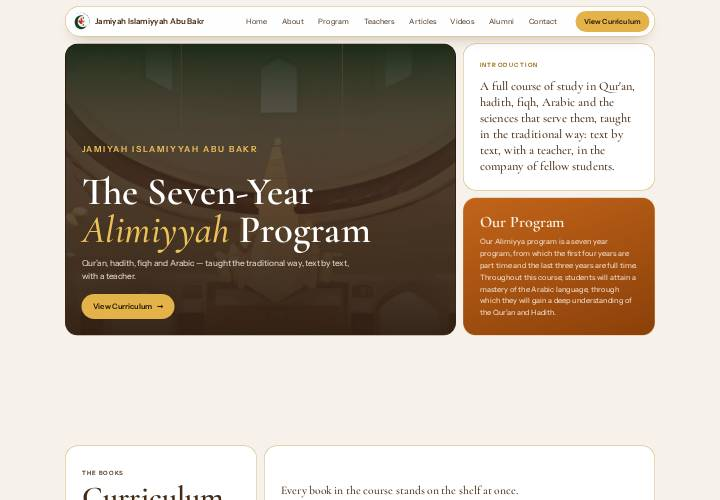
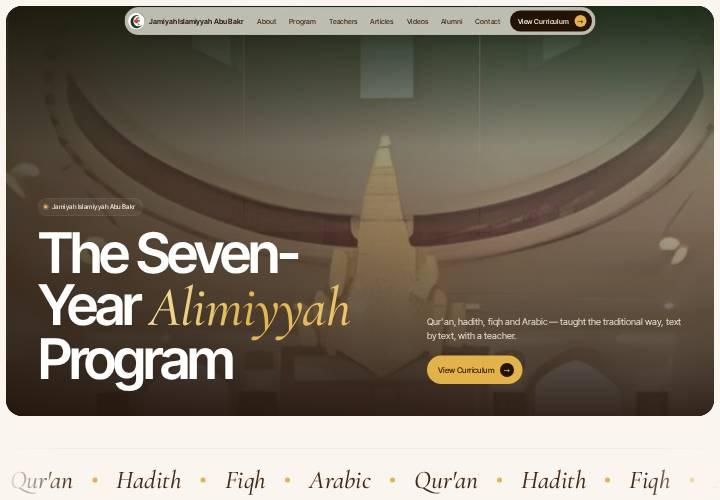

design/canvas-modern
Modernise — the final mockup
Mockup F is the final design. The five before it are the directions it was chosen from. Each mockup redesigns the same page, in the same order, with the site's own content. The palette (chocolate, board brown, rust, bright gold) stays. The bookshelf is restyled to match each mockup: its bays, plank, year labels, open card and full view. Its function is untouched. It is still drawn by the live curriculum.js from content/curriculum.json, so the books, the open card, the full view (folio) and the keyboard work as on the site. The wooden wall, its bolts and the wide-screen ledges of spare books are left out.

F · Final
B's banner and components, on A's grounds
The chosen direction: mockup B's banner, header and menu, and every component in B's dark-and-gold colours, laid on mockup A's backgrounds.
- From B: the full-height banner, the round menu button and centred logo, the "✦" section heads, the fee and discount panels, the timing tiles, the teacher mosaic, the article slider with "Up next", the video cards, the testimony panels, the Brothers/Sisters switch, the round arrows, and the shelf's dark bays
- From A: the warm white page, the pale-gold band behind Articles and Videos, and the espresso footer
- Blended: B's dark components are cut from the site's warm board brown rather than near-black, with gilt edges and brown shadows; the section heads use a deeper gold so they read on white; the pale-gold band fades in and out of the page, and the banner fades down into it
The five directions

A · after alkhalil.ca
Academy
Light and rounded, in a geometric sans.
- A dark hero with one sweeping rounded corner
- Pill buttons ending in an arrow disc
- Rounded cards with small badges for Details
- A pale-gold band for Articles and Videos, and split cards for testimonies
- Shelf: tinted rounded bays, books on a gold rail, the year in a badge

B · after abuhuraira.org
Night Masjid
The whole page after dark, in gold letter-spaced capitals.
- A centred logo between a round menu button and an outline pill
- A full-height banner with a gold ornament rule
- Class timings as prayer-time-style tiles
- A featured article slider with an "Up next" rail, and a teacher mosaic
- Shelf: dark glass bays lit from above, a glowing gold line for a plank

C · after isnacanada.com
Editorial
Large flared Roman capitals, on a grey ground.
- A big-capitals heading with a script line beneath it
- Square gold-gradient buttons
- Details as an impact band of big figures
- Inset-frame tiles for articles, and dark cards with a figure tile for videos
- Shelf: square dark tiles set edge to edge, each in a thin inset frame

D · the three combined
Bento
Every section a grid of rounded tiles, in the site's own type.
- A floating pill header and a bento hero holding Introduction and Our Program
- Dark board tiles beside light gilt-edged ones
- The family discounts drawn as three bars
- Closest to the live site: Cormorant and Instrument Sans stay
- Shelf: white tiles holding a dark board well, on a gold rail

E · common modern UI patterns
Modern
Not tied to the three sites: patterns common on modern product sites.
- A reading-progress bar and a floating glass nav whose highlight slides to the section in view
- An inset rounded hero, a marquee of the four subjects, and an introduction that lights up word by word
- Tabs for the timings, a draggable teacher row with a progress track, cards with a spotlight that follows the cursor
- Testimonies that stack as you scroll; an oversized wordmark and a back-to-top button
- Shelf: glass bays in a contained dark panel, with a spotlight
Research
ISNA Canada
- Thin Didone-style capitals at display size, paired with a script line
- Deep teal full-bleed bands on a light grey ground
- Square buttons in an orange-gold gradient
- An impact report laid out as big figures with small gold labels
- Photo tiles with a thin inset frame and the label at their foot
- Event cards led by a square date tile; a many-column light footer
Research
Al Khalil Academy
- A charcoal hero with one large rounded corner
- A heavy geometric sans with tight tracking, and gold spaced kickers
- Pill buttons with a circled arrow
- Rounded photo cards with small black or yellow badges
- Pale-yellow bands and split testimonial cards
- A dark footer
Research
Abu Huraira Centre
- A dark navy page throughout, with gold letter-spaced Cormorant capitals
- "✦ name ✦" eyebrows and italic ledes over each section
- A centred logo, a round menu button and an outline pill
- A full-screen hero with an ornament rule and a scroll cue
- Prayer-time tiles; a featured slider with an "Up next" rail
- A mosaic of service cards; gold-underlined footer headings
Kept on every mockup: the palette, the bookshelf's behaviour, and the site's content only. That means the same headings, copy, timings, fees, teachers and testimonies, the Brothers/Sisters switch, and the one "View Curriculum" call to action. The TODO placeholders from content/*.json show as they do on the site. Where a mockup wants a picture it uses a plain board panel, because the only photograph is a 1447×374 strip.
Rule: no gold star lattice, star medallions or other star-like patterns in backgrounds or panels. Surfaces are plain: board, rust, gold, cream or the photograph. Use the A–F switch in the bottom-left corner of each mockup to move between them.